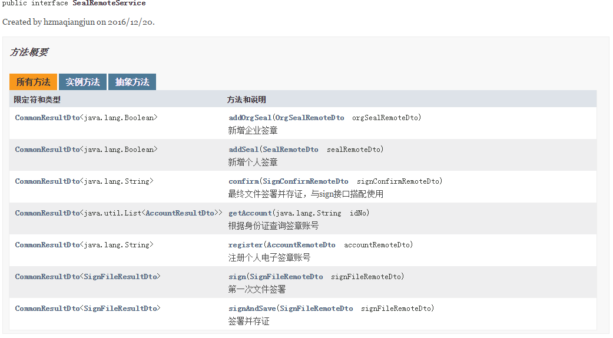
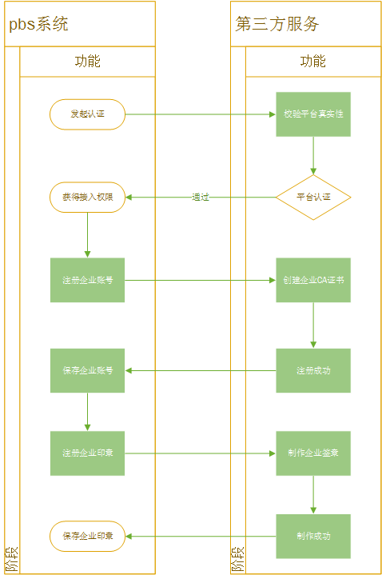
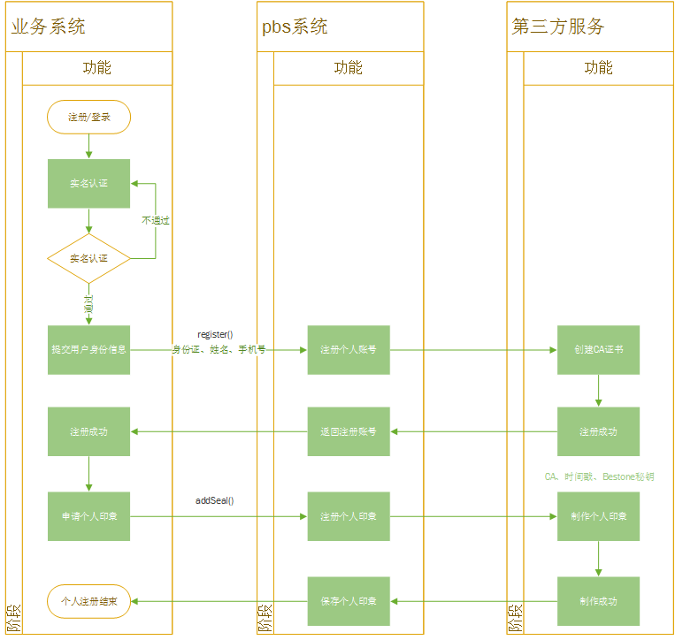
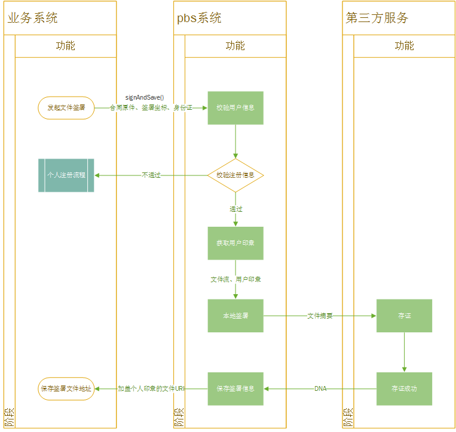
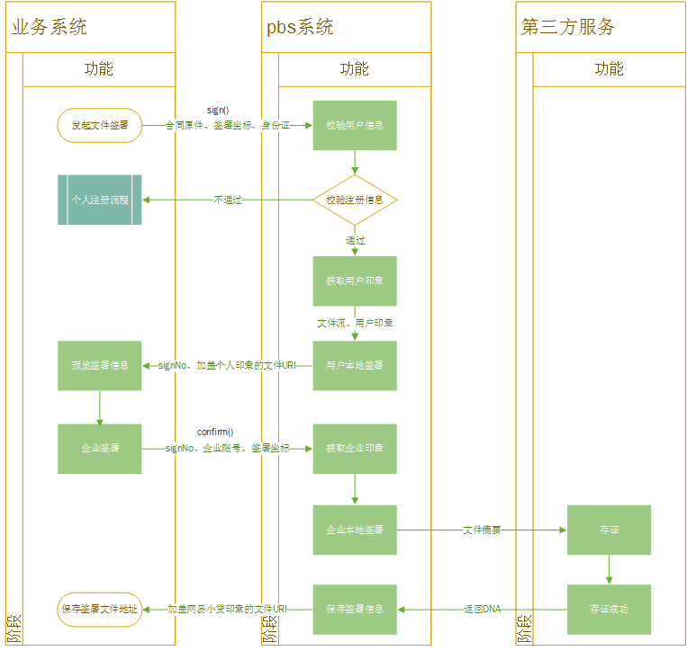
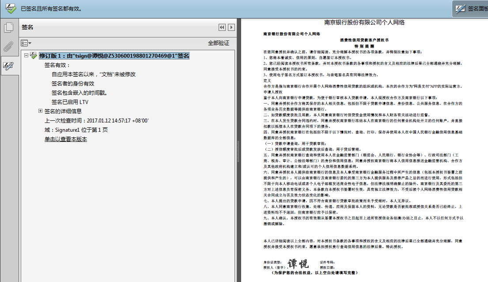
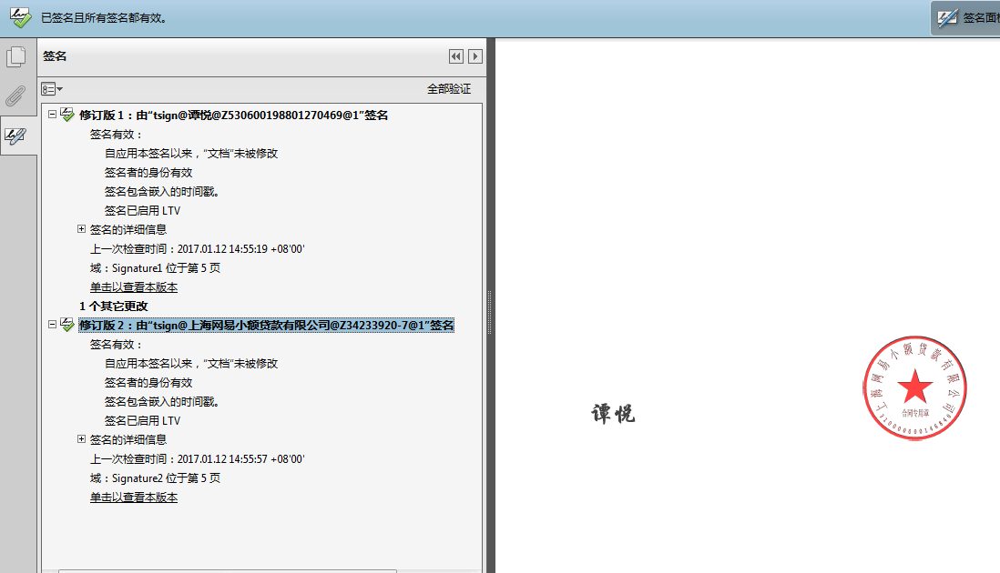

Name : 马强军
Department : 大数据风控技术部
Email: hzmaqiangjun@corp.netease.com
电子签章是电子签名的一种表现形式，利用图像处理技术将电子签名操作转化为与纸质文件盖章操作相同的可视效果，同时利用电子签名技术保障电子信息的真实性和完整性以及签名人的不可否认性。
不具备法律效力
费时费力，成本高
2015年7月18日，央行会同有关部委牵头、起草、制定《关于促进互联网金融健康发展的指导意见》，被认为是互联网金融行业“基本法”
2015年12月28日，银监会发布《网络借贷信息中介机构业务活动管理暂行办法（征求意见稿）》第二十二条[电子签名]各方参与网络借贷信息中介机构业务活动，需要对出借人与借款人的基本信息和交易信息等使用电子签名、电子认证时，应当遵守法律法规的规定，保障数据的真实性、完整性及电子签名、电子认证的法律效力。
网络借贷信息中介机构使用第三方数字认证系统，应当对第三方数字认证机构进行定期评估，保证有关认证安全可靠并具有独立性。
-《中华人民共和国合同法》第十，十一条
-《中华人民共和国电子签名法》第十三，十四条
电子签名同时符合下列条件的，视为可靠的电子签名：
当事人也可以选择使用符合其约定的可靠条件的电子签名
可靠的电子签名与手写签名或者盖章具有同等的法律效力
合同主体可信
签署行为真实有效
结果不可篡改
在本地部署第三方软件，采购Ukey，本地生成合同，法律效力存在瑕疵。
部分CA公司自身除了提供证书以外，也提供电子签名解决方案。做法与传统电子签名方案一致，费用高
只能解决可靠电子签名三要素中电子合同不可篡改问题。对合同主体认定，签约行为无法做出判断







/